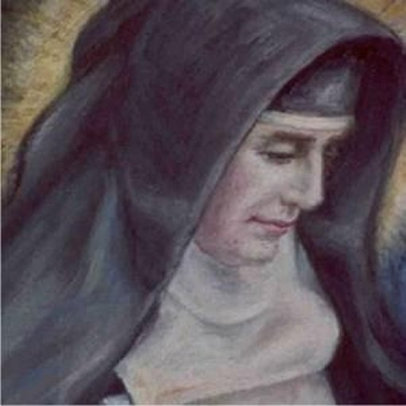

"SANTA RAFAELA MARIA DO
SAGRADO CORAÇÃO DE JESUS"



"A BONDADE, O CARÁTER IMUTÁVEL E UMA FÉ INCOMENSURÁVEL EM DEUS, FIZERAM NASCER ESSA ADMIRÁVEL SANTA".
=ÍNDICE=
 -
SERVAS DO SAGRADO CORAÇÃO DE JESUS
-
SERVAS DO SAGRADO CORAÇÃO DE JESUS
-
FOTOGRAFIAS + ÚLTIMAS NOTÍCIAS + CONVITE + E-MAIL